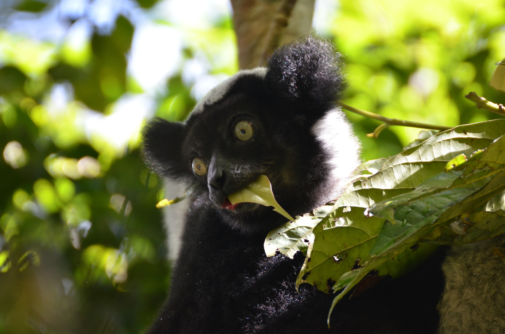

Rapport final du projet BioSceneMada
17 janvier, 2020
Préface

Figure 1: Lémurien de l’espèce Indri indri dans le parc national de Mantadia à l’est de Madagascar. Cette espèce est fortement menacée par la perte d’habitat associée à la déforestation.

This report is licensed under the Creative Commons Attribution-ShareAlike 4.0 International License.